John Walker & Sons XR 21 năm tuổi ra đời nhân sự kiện Ngài Alexander Đệ Nhị được trao tặng tước hiệu Hiệp Sĩ. Công thức chế tác dựa trên bản viết tay của Ngài Alexander kết hợp các thành phần whisky quý hiếm trưởng thành ít nhất 21 năm. Chất rượu sóng sánh như vàng, mang hương vị cân bằng, mạnh mẽ và thanh tao. Những lớp hương đậm đà mang đến nhiều điều ngạc nhiên. Mở đầu với vị mật ong ngọt ngào, gây ấn tượng bằng vị cay nồng ướp trong làn khói hương mờ ảo. Những nốt hương trái cây sống động, tươi mới hòa quyện cùng caramel, nho khô trong hương khói bảng lảng. Hậu vị kéo dài dịu êm trong hương gỗ sồi, như một tuyên ngôn của sự trưởng thành bền bỉ.
